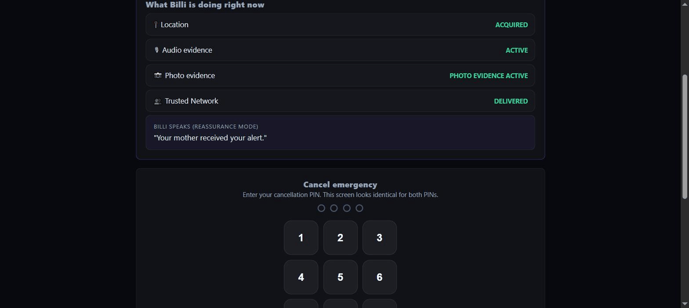

Safety Coordination
Platform
Every second accounted for. Every person protected.
Families · Schools · Businesses · Universities · Hospitals · Communities
- Tap the download button above, open the file, then tap Install anyway when Android warns about an unrecognized developer — expected for an app outside the Play Store, not a sign anything's wrong.
- On first launch, allow the SMS, Location, Microphone, and Camera prompts — these power the app's real features.
- If SMS specifically gets blocked ("for your protection"): Settings → Apps → Billi → ⋮ menu → Allow restricted settings, then go back and allow SMS. This is a standard Android safeguard for sideloaded apps requesting SMS access, not a Billi bug.

Actual screen capture of Billi running against its live backend — the incident IDs, the trusted-network delivery states, and the Gemini analysis above are real output, not a mockup.
Built for the moments 911 alone doesn't reach
Traditional emergency response depends on one thing going right: someone making a clear call, describing where they are and what's happening, while it's actively happening. That assumption fails more often than it should. Indoor GPS handed to 911 dispatch is frequently inaccurate. Language barriers make an already-hard call harder. And for a real share of emergencies — a child who can't safely reach for a phone, someone mid-medical-event who can't speak, a person being coerced by whoever's standing next to them — "just call 911" was never a plan that could reach them in the first place.
Billi starts from a different assumption: the call shouldn't have to be the trigger. A spoken safe word, a held button, a detected fall, a duress PIN entered under threat — any of them set off the same real response. Location, evidence, and a trusted network that already knows the plan start moving immediately, quietly, before anyone has to explain anything out loud. The people it's built for are exactly the people typical emergency response is most likely to miss.
Is this just another safety app? See how Billi actually compares →
How Billi Protects
Configure →
Set up your trusted network, safe words, medical details, and safe zones once. Every piece becomes part of a real, backend-verified Safety Contract — nothing has to be decided during an actual emergency.
Detect →
Nine different real triggers — a spoken safe word, a held button, a detected fall or crash, a duress PIN — all activate the exact same protected response instantly, whichever one fires.
Coordinate →
Real GPS, audio, and AI-synthesized context reach your trusted network and stay updated live, across every device, for as long as the incident is active.
Resolve
The protected person or an authorized guardian closes it out, leaving a clear, auditable record of what happened, when, and how it ended.
What Billi Actually Does
Not a feature roadmap — every item below is real and running right now.
🛰️ Real Device Sensing
Real GPS, motion, and audio capture through the browser or native app — never simulated.
🧠 Gemini AI Reasoning
Live context synthesis, risk analysis, and translation — with an honest deterministic fallback whenever live AI isn't available.
🔑 Nine Real Trigger Paths
Safe word, hold-to-activate, fall or crash detection, a duress PIN, and more — every path reaches the same protected response.
🗺️ Real Safe Zones
An actual interactive map with address search — click, drag, or search a building, not a slider and a guess.
📲 Real SMS Delivery
Sent through the phone's own SIM on Android, or a real carrier gateway for iOS and browser-only sessions.
👨👩👧 Family Device Invite
Add a family member's own phone to your setup remotely — they get their own real sensors, not yours.
🔄 Live Multi-Device Sync
Guardian, protected person, and responder sessions all see the same incident update in real time, on every device.
✅ Honest Labeling, Always
Every capability is marked CONNECTED, SIMULATED, or LOCAL right in the product — nothing ever pretends to be real when it isn't.
Experience Billi — 9 Real-World Scenarios
Click any scenario card below to launch the live active incident simulation.
Protect a Child
Spoken safe word "Blue Folder" matched on Ray-Ban Glasses, geofence exit breach at 42.5 mph, mother response, and 911 CAD packet export.
Help After a Fall
Apple Watch Ultra 2 hard fall detection, 15s unresponsive countdown alert, accelerometry telemetry spike, emergency contact dispatch.
Vehicle Crash
Automotive 8.5g impact decelerometer spike, airbag deployment sensor trigger, rapid trajectory stop alert to first responders.
Medical Emergency
Acoustic distress noise spike (>80dB), pre-authorized Albuterol inhaler instructions dispatched to campus emergency responders.
Campus Emergency
Silent BLE beacon squeeze, campus safety officer dispatch alert, tactical location pin at East Entrance with ground unit status.
Duress Defense
Attacker forces cancellation; user enters Duress PIN 9999. Screen feigns cancellation while silent 911 escalation fires immediately.
Signal Loss Failover
Cellular signal drops to 0 bars in tunnel. Automatic encrypted BLE peer-to-peer mesh relay fallback takes over tracking seamless continuity.
Phone Power-Off
Primary phone battery dies or powers down. Active tracking seamlessly falls back to Apple Watch Ultra 2 and Smart Tag hardware nodes.
45s Progressive Escalation
Guardian unacknowledged after 45 seconds; system automatically escalates and co-dispatches Campus Security & 911 PSAP.
Where We Came From, Where We're Going
Built in the open, honestly labeled at every stage — including how far away the bigger pieces still are.
Where We Came From
- Real 13-service backend + live Gemini AI reasoning
- Real GPS, motion, audio, and camera capture
- Real safe zones — live map, address search, exit-breach alerts
- Native Android app with real SMS via the phone's own SIM
- Family device invite — real household coordination
- Public deployment, security hardening, a real feedback loop
Where We're Going — Soon
- Nearby-user proximity alerts for active incidents
- Continued security & reliability hardening
- Play Store submission — removing the sideload install step
- More real-device verification with active testers
Beyond That
- True native apps — reliable background location, not a browser
- Real physical tracking hardware for genuine redundancy
- An actual 911 / CAD dispatch integration, not a hand-off packet
- Production-grade backend infrastructure at scale
- Satellite fallback for true off-grid coverage
Real, deliberately larger undertakings — tracked separately from what's already shipping.